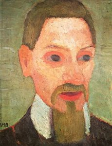
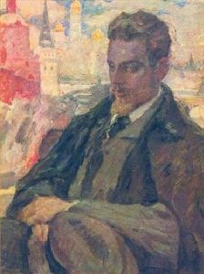
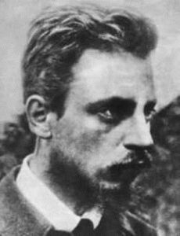
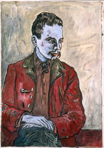
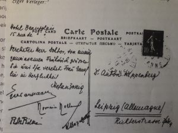
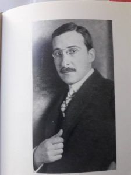

    

Stefan Zweig en Rainer Maria Rilke
Piet Wackie Eysten
…es scheint mir, als ob ich so sehr eines und immer dieses Eine zu sagen hätte…
(brief van Rilke aan Zweig, 14 februari 1907)
Als in 1901 zijn eerste dichtbundel, Silberne Saiten, het licht ziet, stuurt de 19-jarige Stefan Zweig een exemplaar aan de door hem bewonderde dichter Rainer Maria Rilke, zes jaar ouder dan hij. Als ‘Gegengabe’ stuurt Rilke hem een ‘Sonderdruck’ van enkele recente gedichten. Die twee brieven zijn helaas niet bewaard gebleven. Dat is jammer, want zij markeren het aarzelende begin van een bijzondere relatie tussen beide schrijvers, die elkaar pas acht jaar later in Parijs zouden ontmoeten. Vooralsnog sloegen zij verschillende wegen in.
Zweig vertaalde werk van Verlaine en Baudelaire en reisde naar Brussel, waar hij de Belgische dichter Emile Verhaeren leerde kennen. In 1904 voltooide hij zijn dissertatie over Hippolyte Taine. Rilke concentreerde zich op zijn dichtkunst. Ook hij had al op jonge leeftijd enkele dichtbundels gepubliceerd. De bewondering die Zweig voor zijn werk had, was overigens niet wederzijds. Toen in 1902 Rilkes bundel Das Buch der Bilder uitkwam, verzocht hij zijn uitgever géén recensie-exemplaar te sturen aan bepaalde recensenten, onder wie Stefan Zweig, dat waren ‘jongelui die bij gebrek aan talent enkel goedkope kritiek leveren.’
Rainer Maria Rilke werd op 4 december 1875 geboren in Praag, waar in de betere kringen Duits werd gesproken. Aanvankelijk was hij door zijn vader, die zelf om gezondheidsredenen zijn militaire loopbaan had moeten afbreken, voor een carrière als officier bestemd en reeds op 10-jarige leeftijd naar de Militärunterrealschule in St. Pölten gestuurd, vanwaar hij, vier jaar later, overging naar de Militäroberrealschule in Mährisch-Weisskirchen, het huidige Hranice in Tsjechië. Deze vijf jaren militaire opleiding moeten voor de jonge poëet Rilke een kwelling zijn geweest. Hij spreekt later van een ‘afgrond van dagelijkse wanhoop’. Om gezondheidsredenen verlaat hij het instituut. Een poging om hem de Handelsakademie te laten volgen wordt evenzeer een fiasco. In 1892 keert hij terug naar Praag, doet na drie jaar eindexamen en gaat rechten studeren. Maar lang duurt ook dit niet. In 1896 verlaat hij Praag en zijn familie en gaat in München wonen, om zich daar uitsluitend aan zijn dichtkunst te wijden. Een jaar later verschijnt zijn bundel Traumgekrönt.
In München leert hij Lou Andreas-Salomé kennen, een getrouwde vrouw, vijftien jaar ouder dan hijzelf en intiem bevriend met beroemdheden als Nietzsche en Freud. Hij wordt verliefd op haar en reist haar, als zij naar Berlijn vertrekt, achterna. Zijn gedicht Lösch mir die Augen aus: ich kann dich sehn is door haar geïnspireerd. Het krijgt een plaats in Rilkes religieus getinte Stundenbuch, dat in 1903 verschijnt.
Met Lou en haar man reist hij in 1899 en 1900 tweemaal naar Rusland, Lou’s geboorteland, waar zij onder anderen de bejaarde Tolstoi bezoeken. Het jaar daarna leert hij tijdens een bezoek aan het kunstenaarsdorp Worpswede bij Bremen de beeldhouwster Clara Westhoff kennen. Met haar treedt hij op 28 april 1901 in het huwelijk, maar dat betekent geenszins het einde van zijn rusteloze reizen, integendeel. Hoewel hij zich aanvankelijk met Clara en hun dochtertje Ruth, dat op 12 december geboren wordt, in Westwede, een dorp vlakbij Worpswede vestigt, wordt al snel Parijs zijn ‘Wahlheimat’. ‘Diese Stadt ist sehr gross und bis an den Rand voll Traurigkeit’, schrijft hij op 11 september 1902, twee weken na zijn aankomst aan Clara. Toch, of misschien wel juist daarom, blijft Parijs de volgende jaren het vaste punt in het leven van de melancholieke dichter. Hij keert er na zijn omzwervingen steeds weer terug. Het doel van zijn reis naar de Franse hoofdstad is de beeldhouwer Auguste Rodin, bij wie Clara in Parijs heeft gestudeerd en over wie hij een publicatie voorbereidt. Hij vat een onbegrensde bewondering op voor de 72-jarige kunstenaar. Zijn monografie over de vereerde meester verschijnt in 1903. Inmiddels is, naast diverse prozawerken, zijn dichtbundel Das Buch der Bilder verschenen. Ook van zijn Stundenbuch heeft hij de eerste twee delen in deze jaren voltooid. In september 1905 aanvaardt hij een aanstelling als Rodins secretaris. Maar al na acht maanden, in mei 1906, komt het tot een breuk tussen beiden. Het is het jaar waarin zijn bewaard gebleven briefwisseling met Stefan Zweig begint.
Stefan Zweig, op 28 november 1881 geboren in Wenen, heeft zich tot dan toe vooral toegelegd op het vertalen van werk van Paul Verlaine, Emile Verhaeren en anderen. Daarnaast is in 1904 van zijn hand de novellenbundel Die Liebe der Erika Ewald verschenen. Na zijn promotie ‘mit Auszeichnung’ dat jaar (over Hypolite Taine) werkt hij aan zijn treurspel Tersites. Zijn bewondering voor Rilke is onverminderd. Aan Ellen Key, een Zweedse vriendin die ook met Rilke bevriend is, schrijft hij dat hij Rilke, ‘de grootste Duitse Lyriker’, graag zou willen ontmoeten, om hem ‘persönlich meine Verehrung zu sagen’. Via haar weet hij Rilke, die in diverse plaatsen in Duitsland lezingen houdt, tijdens diens ‘Vortragsreise’ te bereiken met het verzoek Wenen in zijn reisplan op te nemen. Daartoe is Rilke wel bereid, maar door de plotselinge dood van zijn vader op 14 maart 1904 komt het er niet van .
In 1903 is inmiddels het laatste deel van Rilkes Das Stundenbuch verschenen, een over vier boeken verdeelde verzameling gedichten waarin Rilke zijn verering voor God tot uitdrukking brengt. In Die Nation, een literair tijdschrift dat in Berlijn verschijnt, wijdt Zweig daaraan een lovende bespreking, getiteld Verse eines Gottsuchers. De gedichten, schrijft Zweig, die ‘als bomen uit de aarde tot God lijken op te rijzen,’ moeten met liefde worden gelezen, als een gebedenboek, ‘in stiller Stunde’. Hij stuurt zijn recensie aan Rilke, samen met een exemplaar van zijn eigen nieuwste dichtbundel Die frühen Kränze. Hij hoopt, als hij in april 1906 in Parijs is, Rilke daar te kunnen ontmoeten. Maar dat lukt niet, Rilke is, al weer, op reis. In een uitvoerige brief vanuit Capri bedankt hij Zweig voor de recensie en de dichtbundel. Deze brief, die van 14 februari 1907 dateert, behelst een meesterstuk aan voorzichtige, geclausuleerde en allerelegantst verwoorde kritische appreciatie van het werk van de jonge dichter Zweig. ‘Dit boek’, schrijft Rilke,
‘zal u, hoe snel u zich ook verder zult ontwikkelen, altijd dierbaar blijven. In welke richting uw verdere groei zich ook ontwikkelen moge, dit boek zal daarin altijd zijn plaats behouden, zijn plaats als startpunt, als vruchtbeginsel dat zichtbaar blijft als eerste samenvatting van stille dagelijkse groei. U zult begrijpen dat ik daarmee alleen iets goeds en belangrijks bedoel, het beste misschien wel dat men van een vroeg werk zeggen kan.’
Rilke filosofeert naar aanleiding hiervan ook over de betekenis van zijn eigen vroege werken, die hij niet wil verloochenen, maar waarvan het hem voorkomt, schrijft hij, dat hij eigenlijk steeds, en steeds opnieuw, maar één ding te zeggen heeft, zodat zij later slechts door betere, meer volgroeide formuleringen als het ware worden vervangen, en zodoende altijd iets provisorisch zullen behouden. En in hoeverre is het latere werk dan eigenlijk al definitief?, voegt hij eraan toe.
In zijn antwoord dringt Zweig er bij Rilke op aan een bloemlezing uit zijn werk samen te stellen. De verschenen bundels zijn niet allemaal meer verkrijgbaar en voor een uitgave van de verzamelde gedichten acht Rilke zelf de tijd – of beter: zijn werk – nog niet rijp. Zweig noemt het ‘tragisch’ dat mensen voor wie deze gedichten, zoals voor hem, ‘een belevenis’ zouden kunnen betekenen, er aldus van verstoken blijven. Wat zou het niet heerlijk zijn, meent hij, als men zo’n bloemlezing aan vrienden cadeau zou kunnen doen en het ‘als Geschenk lieben Leute auf den Tisch’ zou kunnen leggen.
In december 1907 verschijnen Rilkes Neue Gedichte, die hij opdraagt aan Rodin. In zijn recensie in Das literarische Echo geeft Zweig blijk het ‘nieuwe’ van deze gedichten feilloos te hebben aangevoeld. Onder invloed van de bewonderde Rodin heeft Rilke – letterlijk – oog gekregen voor het belang van de precieze waarneming van de dingen, ook in de dichtkunst. Hij spreekt zelf van ‘Ding-gedichte’. Het beroemde gedicht Der Panther in de bundel Neue Gedichte is er het meest treffende voorbeeld van.
Pogingen tot een persoonlijke kennismaking worden echter telkens door de omstandigheden gedwarsboomd. Zweig reist naar Italië, Rilke naar Praag, Breslau, Wenen, Venetië. Maar zij geven niet op. Men neemt zo moeilijk afscheid, schrijft Zweig, ‘von einer Hoffnung, die einem fast ein Bedürfnis ist’: mooi geformuleerd, maar lastig om fatsoenlijk in het Nederlands te vertalen… Ook Rilke betreurt het dat het voorlopig niet tot een persoonlijke kennismaking komt. Hij beklaagt zich over de beperkingen van het briefschrijven, ‘ohne Korrektur der Gegenrede und Gegenwart des andern.’ Maar als Zweig, bij terugkeer van een reis naar India, begin maart 1909 in Marseille voet aan land zet, gaat hij direct naar Parijs. Daar zoekt hij Rilke op. Het is hun eerste, overigens slechts vluchtige kennismaking.
Gedurende de eerstvolgende jaren is er naar het schijnt geen rechtstreeks contact geweest, beide schrijvers waren veel op reis. Zweig bezocht in deze periode voor het eerst Noord-Amerika, Canada, Panama en Cuba. Hij is zeer onder de indruk van dit voor hem nieuwe deel van de wereld. ‘Hier wird die menschliche Masse Naturgewalt’, schrijft hij bij aankomst in New York. Verder heeft hij zijn handen vol aan de voorbereiding van een lezingentournee door Duitsland met Emile Verhaeren, de publicatie van zijn novellenbundel Erstes Erlebnis en zijn toneelstuk Das Haus am Meer, waarvan in oktober 1912 de première plaatsvindt in het Wiener Burgtheater. Ook Rilke is veel op reis, onder andere naar Italië en Duitsland, waar hij, zoals vaker, in Leipzig logeert bij zijn uitgever Anton Kippenberg, eigenaar van uitgeverij Insel Verlag, en diens vrouw Katharina. Kippenberg is behalve Rilkes (èn Zweigs) uitgever ook een trouwe en hulpvaardige vriend. Het is in diens huis dat Rilke zijn enige roman, Aufzeichnungen des Malte Laurids Brigge, schrijft. Na een bezoek aan Egypte keert hij via Italië en Spanje naar Parijs terug.
Tot een rechtstreeks contact komt het pas weer in maart 1913. Als Zweig in Parijs van Rolland en Verhaeren, die hij in die stad altijd als eersten opzoekt, hoort dat Rilke in Parijs is, laat hij prompt een bescheiden briefje bij hem bezorgen:
‘Geachte Heer Rilke,
door een gelukkig toeval verneem ik dat u weer in Parijs bent, waar ik jaren geleden het genoegen had U voor de eerste keer te mogen ontmoeten. Ik blijf hier nog een week of drie, vier. Zoudt U in die periode een vrije avond of een niet voor Uw werk bestemd uurtje hebben dat u bereid bent aan mij op te offeren, dan doet u daarmee een groot genoegen aan Uw U in oprechte bewondering toegewijde
Stefan Zweig.’
Deze hoffelijke, bijna onderdanige formulering verraadt hoezeer Zweig nog altijd bang is zijn oudere collega tot last te zijn. Zijn dagboekaantekening van die dag luidt: ‘Ob er sich mir zeigen wird?’, ‘Of hij mij zal willen zien?’ De volgende dag ontvangt hij echter een hartelijke uitnodiging, die hij beantwoordt met een uitnodiging zijnerzijds. Hij heeft voor maandag enkele vrienden uitgenodigd voor een lunch in Restaurant Boeuf à la mode. Het zijn Emile Verhaeren (‘die vaak met warmte over u spreekt’), Romain Rolland (‘die móet u leren kennen, mijn vriendschap met hem is een van de grootste en zuiverste dingen in mijn leven’) en Léon Bazalgette, de Whitman-vertaler (‘een oude vriend’). ‘Verrukkelijk deze mensen bij elkaar te hebben, onvergetelijke uren’, schrijft Zweig ’s avonds in zijn dagboek. De door de Spaanse zon gebruinde Rilke noemt hij ‘knabenhaft mit prachtvolle Beweglichkeit, die Hände sehr zart.’ De disgenoten sturen gezamenlijk een briefkaart aan Anton Kippenberg, hun gemeenschappelijke uitgever.
De volgende dag zoekt Zweig Rilke op. Zij spreken over hun werk en dat van anderen en bezoeken samen een boekhandel. Enkele dagen later ontvangt Zweig, die een verwoed autografenverzamelaar is, van Rilke het manuscript van diens Die Weise von Liebe und Tod des Cornets Christoph Rilke. Als zij kort nadien ergens in de stad samen eten, laat Rilke zich lovend uit over Zweigs verhalenbundel Erstes Erlebnis. Behalve over gemeenschappelijke vrienden en bekenden als Rodin, Hauptmann, Verhaeren en Hofmannstahl, spreken zij ook over de stad Parijs, ‘das wir sehr gemeinsam fühlen’, noteert Zweig. Zij lopen nog samen op tot het Luxembourg voor zij ieder huns weegs gaan. Een volgende afspraak mislukt en zo vertrekt Zweig eind april naar Wenen zonder dat zij elkaar nog hebben gezien.
Het volgend voorjaar bevinden zij zich beiden weer in Parijs, waar zij elkaar dan, voor zover valt na te gaan, slechts één keer ontmoeten. Voordat het tot een tweede ontmoeting kan komen reist Rilke alweer naar Italië. Daar verblijft hij met regelmaat op het kasteel Duino, gelegen op een hoge rots aan de Adriatische kust bij Triëst, van Prinses Marie von Thurn und Taxis-Hohenlohe, die hij in 1910 in Parijs heeft leren kennen en met wie hij tot het eind van zijn leven een nauwe band heeft. De Duineser Elegien, waarvan de eerste, de tweede en deels de derde elegie daar in een vlaag van intense inspiratie in januari en februari 1912 zijn ontstaan, ontlenen hieraan hun naam. In datzelfde jaar verschijnt zijn Cornet Christoph Rilke, dat bij eerste verschijnen zes jaar eerder vrijwel onopgemerkt was gebleven, maar nu, als eerste deeltje in de beroemde Insel-Bücherei à raison van 25 ct., in een oplage van vele duizenden exemplaren enorme populariteit geniet.
Als in de zomer van 1914 de oorlog uitbreekt verblijft Zweig in België, in het badplaatsje De Haan bij Oostende. Hij reist spoorslags terug naar Wenen. Rilke verlaat op 1 augustus, met slechts wat reisbagage, Parijs en vertrekt naar München in de hoop daar Lou Salomé te treffen. Twee dagen later verklaart Duitsland Frankrijk de oorlog. De weg naar Parijs is nu afgesneden. Dan overkomt hem iets onverwachts, net zo ongelofelijk als het bestaan van de Eenhoorn, schrijft hij later aan Kippenberg. Een onbekende mecenas heeft hem een bedrag van 20.000 kronen (in huidige valuta ca 210.000 euro) toegekend. Het bedrag is inmiddels aan zijn uitgever en zaakwaarnemer Kippenberg overgemaakt. Gezien de onzekere omstandigheden acht die het verstandig – wat het waarschijnlijk ook was, gezien Rilkes meestal grillige uitgavenpatroon – dit bedrag niet direct integraal aan hem ter beschikking te stellen, maar het voorlopig op rente te zetten. Die voorzichtigheid komt hem echter niet veel later op bittere verwijten van de rechthebbende te staan.
In september 1915 krijgt Rilke het bericht dat al zijn in Parijs achtergebleven bezittingen in beslag zijn genomen en op last van zijn huisbaas, wegens een huurachterstand van een jaar, zijn geveild. Zijn have en goed blijken al in april openbaar te zijn verkocht. Aan zijn schaarse meubelen, zijn kleren en dergelijke hecht hij weinig. Maar ook zijn boeken (waar hij van hield als van zwijgende huisdieren, schrijft Zweig in Die Welt von gestern), eerste drukken van zijn werk, boeken van anderen met aan hem gerichte opdrachten, originele tekeningen van Rodin, manuscripten, aantekeningen, brieven, àlles is weg. En hoe gemakkelijk had dat niet voorkomen kunnen worden!, roept hij uit in de brief die hij op 5 oktober aan Kippenberg schrijft. ‘Deze gift van een onbekende was iets onbegrijpelijks, zij kwam mij, mij! toe. Als de betaling niet toevallig via de uitgeverij was gelopen had ik mij zelf niet eens hoeven te verwijten haar tegenover U te verzwijgen. Uw wijze raad heeft mij belet mij werkelijk eigenaar te voelen van deze belangrijke en raadselachtige schenking.’ [1]
Nauwelijks een maand later treft hem een tweede slag: hij wordt alsnog, na eerst afgekeurd te zijn, opgeroepen om zich op 4 januari 1916 voor de krijgsdienst te melden. Hij reist onmiddellijk naar Wenen, in de hoop dat invloedrijke vrienden hem kunnen helpen aan dit noodlot te ontkomen. Hij zoekt er Zweig op, en vertelt hem wat hem in Parijs is overkomen. Zweig roept onmiddellijk de hulp in van Rolland in het neutrale Zwitserland, die kan misschien in Parijs iets bereiken. Rolland schakelt op zijn beurt André Gide in. Deze wendt zich tot de veilingmeester, die echter alleen kan bevestigen dat de gehele inboedel, een jaar geleden al, is verkocht.
Rilke is inmiddels sinds begin januari gelegerd in een kazerne in Hütteldorf, een voorstadje van Wenen, waar hij in opleiding is als infanterist. Hij ondergaat de dienst als een marteling. Op zondagochtend 16 januari bezoekt hij Zweig, die zelf sinds 1 december als dienstplichtige te werk is gesteld in het Kriegsarchiv in Wenen. ‘Rilke is geheel vernietigd door de dienst’, noteert hij in zijn dagboek, ‘meer misschien dan één van ons. Zijn manuscripten schijnen definitief verloren te zijn.’ Aan Rolland rapporteert hij dat Rilke in een toestand verkeert van ‘de uiterste depressie’. Eind januari lukt het om Rilke overgeplaatst te krijgen en ook hem bij het Kriegsarchiv te stationeren. Daar is het leven – ‘het onafzienbare nietsdoen dat tot de sterkste militaire ervaringen behoort’, schrijft hij aan Kippenberg – dragelijker, al heeft hij nog steeds veel moeite om zich in zijn lot te schikken. Hoewel men hem welgezind is en de werkers in het Archiv thuis kunnen wonen (Rilke in het Weense appartement van de Prinses van Thurn und Taxis), met werktijden van 9 tot 3, leeft hij in een doffe, uitzichtloze berusting.
Dan krijgt Zweig het bericht dat misschien nog iets van Rilkes paperassen gespaard is gebleven. De ‘domme, chauvinistische en eigenzinnige veilingmeester’ (rapporteert Gide) werd achterdochtig. Waarom wordt er zoveel belang gehecht aan de paperassen van die Duitser? Van de veilingmeester krijgt Gide de naam van een handelaar in tweedehands boeken die op de veiling heeft gekocht. Maar die herinnert zich niets, hij is alleen maar tussenhandelaar, alles is al lang weer doorverkocht, hij weet niet meer aan wie. Twee dozen met papier, correspondentie en manuscripten, die voor de veiling toch geen waarde hadden, weet Gide nog te achterhalen. Hij brengt ze in veiligheid bij uitgeverij Gallimard. Het is alles wat er van Rilkes bezittingen rest. De veiling blijkt slechts 538 francs te hebben opgebracht.
In Wenen voeren Zweig en Rilke lange gesprekken. ‘Roerend,’ vindt Zweig Rilkes afschuw om over de oorlog te moeten schrijven. ‘Voorbeeldig gewetensvol’, noemt hij hem, ‘ik begin hem steeds beter te leren kennen.’ Een door Kippenberg opgesteld en door diverse personen van naam, onder wie Hofmannstahl en Karl Kraus, ondertekend verzoekschrift brengt redding. Op 27 juni wordt Rilke uit de dienst ontslagen, begin juli keert hij terug naar München.
Zweig weet van de Oostenrijkse autoriteiten verlof te krijgen om naar Zwitserland te reizen om daar de première bij te wonen van zijn ‘dramatische Dichtung’ Jeremias. Het stuk gaat over de profeet Jeremia, die als een oud-testamentische Cassandra de Joden de ondergang voorspelt van Jerusalem in hun oorlog tegen Nebukadnezar. Jerusalem valt, de overlevenden trekken weg, maar in de diaspora troost en begeleidt hen Jeremia. ‘Man kann ein Volk bezwingen, doch nie seinen Geist’, is Zweigs niet mis te verstane boodschap. Hij stuurt een exemplaar aan Rilke, tegelijk met een kleine monografie over hun gemeenschappelijke vriend Emile Verhaeren, die in november 1916 door een noodlottig treinongeluk om het leven is gekomen.
In Zwitserland brengt Zweig allereerst Rilkes dank over aan Rolland voor diens tussenkomst bij de reddingsoperatie van zijn verloren gewaande papieren. De première van Jeremias in Zürich op 27 februari 1918 is een groot succes. Er worden in korte tijd duizenden exemplaren van verkocht en prompt verschijnt een Franse vertaling. Van alle kanten oogst Zweig lof. Rolland roemt de schoonheid van het stuk, waarin hij ‘de veelzijdige en edele Europese geest [herkent] die onze tijd nodig heeft.’ Thomas Mann acht het stuk het belangrijkste dat hem in deze tijd van oorlog onder ogen is gekomen.
Rilke keert na zijn ontslag uit de dienst terug naar München. De oorlog, en vooral zijn ervaringen in het Weense Kriegsarchiv, drukken zwaar op hem, hij kan niet tot werken komen. Hij houdt zich bezig met vertalen, onder andere gedichten van Paul Valéry, en het beantwoorden van de vele brieven die hij op zijn Münchense adres heeft aangetroffen. Het bericht van Rodins overlijden op 17 november 1917 grijpt hem sterk aan. Hij verfoeit ‘de muur van oorlog’ die hem definitief scheidt van zijn vrienden Verhaeren en Rodin, schrijft hij aan zijn vrouw Clara, ‘als de rook is opgetrokken zullen zij er niet meer zijn.’ En aan Marie von Thurn schrijft hij: ‘Mijn molen is stil gevallen, nu de stroom die hem in beweging bracht, bevroren is.’ Rilkes brieven waren soms net zo poëtisch als zijn gedichten. ‘Bij Rilke’, zei ooit zijn vriend Rudolf Kassner, ‘zijn vers en brief als jas en voering, maar een voering van zó kostbaar materiaal dat je de jas ook met de voering naar buiten zou kunnen dragen’.
De politieke situatie in München is in november 1918 buitengewoon verwarrend. Koning Ludwig III wordt afgezet, socialistenleider Kurt Eisner roept op 8 november de Vrijstaat Beieren uit. De novemberrevolutie zou binnen enkele dagen overslaan naar Berlijn, wat het einde van het Duitse keizerrijk zou betekenen. Rilke weet een visum voor Zwitserland te krijgen. Hij vertrekt op 11 juni 1919, vast van plan in betere tijden naar Duitsland terug te keren. Daar zou het niet van komen.
Zweig is inmiddels in maart 1919 naar Oostenrijk teruggekeerd. Daar betrekt hij het grote huis op de Kapuzinerberg in Salzburg dat hij twee jaar eerder samen met Friderike, met wie hij het jaar daarop in het huwelijk treedt, heeft gekocht. Van enig verder contact met Rilke blijkt niet, afgezien van een zakelijke brief van Rilke (9 maart 1921), die bij afwezigheid van Stefan (hij verblijft in Italië) door Friderike wordt beantwoord, over mogelijke huisvesting in Salzburg voor een vriendin. Donald Prater, biograaf van zowel Zweig als Rilke, verklaart in zijn Rainer Maria Rilke und Stefan Zweig in Briefen und Dokumenten deze ogenschijnlijke verwijdering uit de tegenstelling tussen Rilkes ‘Weltab– en Zweigs Weltzugewandheit’ en hun uiteenlopende opvattingen over het wezen van de kunst: Zweig, die zijn werk als auteur op traditionele wijze voortzette, onder invloed van Rolland tevens in dienst van zijn ideaal van humane verbondenheid tussen mensen en culturen, terwijl Rilke geheel eigen wegen zocht in de autonome dichtkunst, zonder zich ondergeschikt te maken aan welke goede bedoeling dan ook. Geen wonder, schrijft Prater, dat Rilke niet de noodzaak voelde een band in stand te houden met een schrijver met een zo tegengestelde kunstopvatting, terwijl Zweig van zijn kant veel te bescheiden was om in Rilkes eenzaamheid te willen binnendringen.
Het grote huis op de Kapuzinerberg lijkt een inspiratiebron voor Zweig te zijn. Hij kan er ongestoord werken, de eerstkomende jaren zijn de meest productieve van zijn leven. Essays, vertalingen, inleidingen bij werk van anderen, novellen, de eerste Sternstunden, het verschijnt allemaal in hoog tempo. Zijn roem, ‘een gast die [hij] nooit verwacht had’, verspreidt zich wereldwijd.
Rilke daarentegen kan in Zwitserland aanvankelijk moeilijk zijn draai vinden. In verschillende plaatsen houdt hij voordrachten, maar hij hunkert naar de rust die hij nodig heeft om te werken. Die rust vindt hij uiteindelijk in kasteel Muzot, gelegen in de buurt van Sierre. De kapitaalkrachtige Zwitserse industrieel en filantroop Werner Reinhart is bereid het te huren (een jaar later koopt en restaureert hij het) en stelt het om niet aan Rilke ter beschikking. Er lijkt in deze rustieke behuizing – nauwelijks meer dan de toren van een voormalig kasteel -, waar Rilke in de zomer van 1921 zijn intrek neemt, een storm van inspiratie op te steken. Binnen vier dagen, van 2 tot 5 februari 1922, schrijft hij er niet minder dan 26 sonnetten. Zij vormen het eerste deel van zijn Sonette an Orpheus. Prompt daarop voltooit hij, ook in slechts enkele dagen, de Duineser Elegien, waaraan hij tien jaar eerder in Duino was begonnen. Voor het einde van diezelfde maand voltooit hij bovendien, naast een aantal op zichzelf staande gedichten, het tweede deel van Die Sonette an Orpheus, opnieuw 29 sonnetten. ‘Es war ein namenloser Sturm, eine Orkan im Geist’, schrijft hij aan Prinses Marie von Thurn. Beide cycli, de sonnetten en de elegieën, behoren, naast The waste land van T.S. Eliot en Les fleurs du mal van Charles Baudelaire, tot de absolute top van de Europese dichtkunst van de negentiende en twintigste eeuw.
Kasteel Muzot
De beslotenheid van kasteel Muzot wordt hem nu echter te benauwend, hij gaat naar Parijs. Daar ontvangt hij uit handen van André Gide de beide dozen met persoonlijke bezittingen die bij de veiling van destijds gespaard zijn gebleven. Hij krijgt gezondheidsproblemen en reist schielijk terug naar Zwitserland, waar hij wordt opgenomen in de kliniek Valmont bij Montreux, waar hij eerder opgenomen is geweest. Hij blijkt te lijden aan ongeneeslijke leukemie en sterft op 29 december 1926, enkele weken na zijn 51e verjaardag.
Van Zweigs bewondering en ontzag voor zijn dichter-vriend blijkt behalve uit brieven aan enkele vrienden, onder wie Anton Kippenberg, vooral uit de rede die hij houdt tijdens de herdenkingsbijeenkomst in het Staatstheater van München op 20 februari 1927. De tekst van die rede, ‘Abschied von Rilke’, heeft hij later opgenomen in de bundel Begegnungen mit Menschen, Büchern, Städte. Een uitnodiging om in Wenen een herdenkingsrede uit te spreken heeft hij afgeslagen, alleen Hofmannstahl zou daarvoor, meent hij, in aanmerking komen. Tien jaar later, tijdens een symposium in Londen ter gelegenheid van de tiende sterfdag van Rilke in 1936, voert hij opnieuw het woord.
Maar het mooiste, meest ontroerende portret van de zo vereerde vriend heeft hij in 1941, tegen het eind van zijn leven, geschetst in Die Welt von gestern, in het hoofdstuk Paris, die Stadt der ewigen Jugend, met de inleidende woorden:
‘Als ik de dierbare naam van Rainer Maria Rilke, hoewel hij een Duits dichter was, op de bladzijden over mijn Parijse tijd neerschrijf, dan is dat omdat ik in Parijs het meeste en beste contact met hem heb gehad en ik zijn gezicht als op oude foto’s steeds voor de achtergrond van deze stad zie, die hij als geen andere heeft liefgehad.’
Waren zij vrienden, Zweig en Rilke? Donald Prater meent van wel. Toch zegt Zweig in zijn Londense herdenkingsrede dat hij zich geen ‘friend’ van Rilke zou durven noemen, daarvoor was ‘de afstand van mijn respect voor hem’ te groot.
-o-
[1] De anonieme mecenas was de schatrijke filosoof Ludwig Witgenstein. Rilke noch Kippenberg heeft dat ooit geweten, de betaling aan Kippenberg liep via Ludwig von Ficker, uitgever van het literaire blad Der Brenner, die de ware toedracht pas in 1954 heeft onthuld.